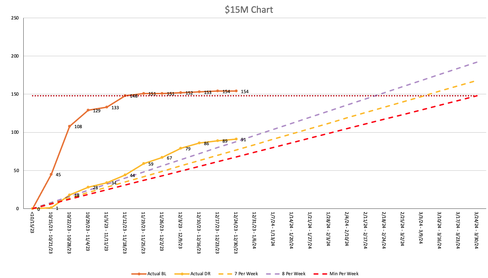

Predictability is designed
Reliable outcomes are not produced by more reporting. They emerge when architecture, work design, and system constraints are aligned to make delivery legible.
Jay Paulson helps organizations turn engineering into a value engine the business can steer, with architecture-led delivery, systems maturity, and operating visibility that builds executive confidence.
Core Ideas
Public-facing perspective, not playbook detail: the emphasis is on what leaders need to see, shape, and trust when engineering must perform predictably under real business pressure.
Reliable outcomes are not produced by more reporting. They emerge when architecture, work design, and system constraints are aligned to make delivery legible.
Executive confidence rises when leaders can see signal early enough to act, rather than learning the truth only after velocity narratives collapse.
Delivery performance is inseparable from the technical environment. Mature systems reduce drag, expose options, and let teams scale without chaos tax.
Signature Model
How engineering organizations move from activity to trusted outcomes.
Engineering leadership is not about increasing activity. It is about building systems that make outcomes predictable, so leaders can make decisions with confidence.
Selected Outcome
Jay helped leadership see the real delivery signal early enough to avoid a major rollout slip, protecting approximately $15M in projected revenue and restoring decision confidence. The outcome did not come from more reporting. It came from making the system legible.

Featured chart
About Jay
Jay Paulson is a senior engineering leader, speaker, and advisor focused on architecture-led transformation, flow-based systems thinking, and connecting engineering behavior to business outcomes leaders can trust.
Featured Speaking
A senior-leadership talk on replacing activity theater with architecture-aware, sustainable delivery systems that improve both confidence and team health.
Why leaders should optimize for truthful visibility, decision quality, and early signal instead of being seduced by output metrics.
Featured Writing
A leadership argument for why predictable delivery comes from system design, architecture, and work shaping rather than post-facto operational pressure.
Writing themes include flow-based leadership, architecture as a business lever, and the signals executives need to govern engineering well.
Work With Jay
Best fit for organizations that need sharper delivery confidence, better architectural leverage, and a more truthful operating view of engineering.